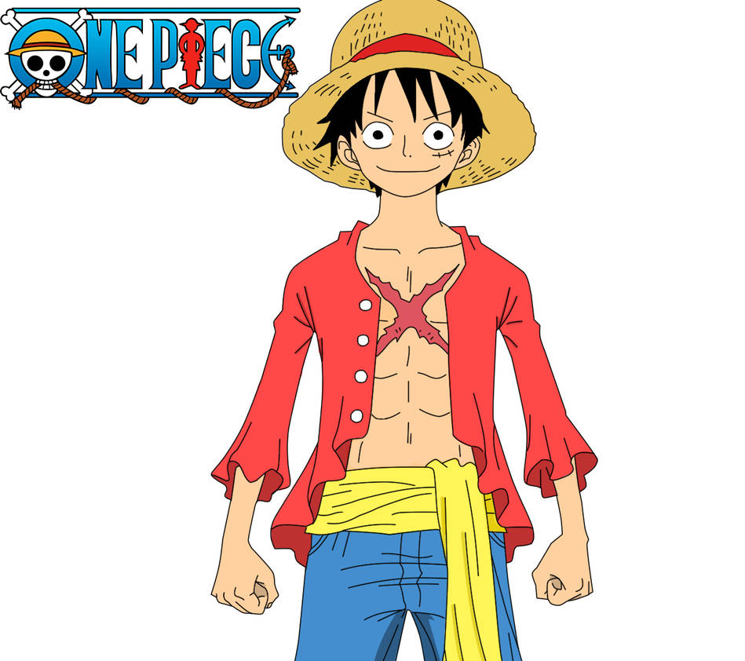

Luffy
Monkey D. Luffy (モンキーディールフィー Monkī Dī Rufi?, também conhecido como Luffy do Chapéu de Palha), é um personagem fictício e o protagonista da franquia One Piece criada por Eiichiro Oda. Ele é apresentado como um jovem cujo corpo ganha as propriedades de borracha após ter comido a Gomu-Gomu no Mi, uma das várias frutas amaldiçoadas conhecidas como Akuma no Mi ou Frutas do Diabo. Em busca de seu sonho de ser o Rei dos Piratas, Luffy navega pelo mundo procurando o lendário tesouro One Piece que foi deixado por Gol D. Roger, o antigo Rei dos Piratas. Alegre e aventureiro, Luffy cria seu próprio bando chamado os Piratas do Chapéu de Palha e eles são constantemente antagonizados pela marinha do Governo Mundial. Em batalha, Luffy usa a elasticidade de seu corpo para se esticar e lutar./
Um protótipo
Um protótipo de Luffy apareceu pela primeira vez no one-shot Romance Dawn lançado por Eiichiro Oda em 1996 enquanto ele ainda era um assistente de outros mangakás. O personagem foi refinado e reutilizado para o mangá de One Piece um ano depois e então adaptado para anime, consequentemente aparecendo em seus filmes,
O novo yonkou?
Luffy não é considerado um Yonko, mas o Quinto Imperador do mar. Embora possa parecer semelhante, é diferente. O título de Luffy como Quinto Imperador significa que ele tem muita influência e é capaz de se tornar um Yonko, substituindo outro no futuro.